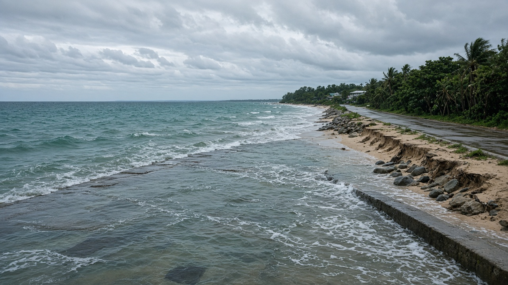
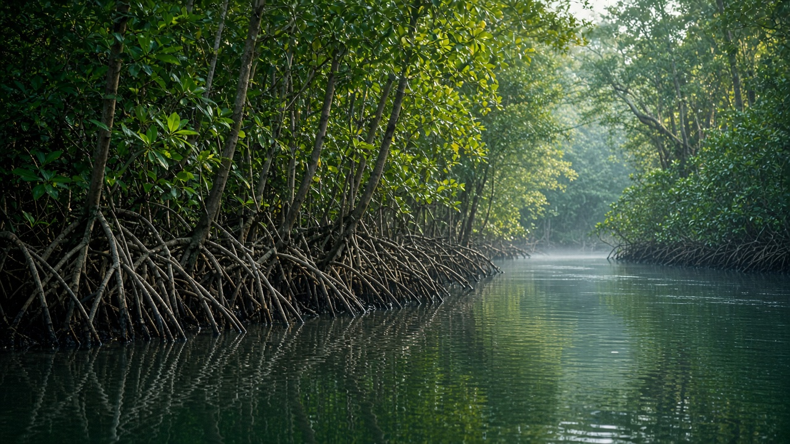
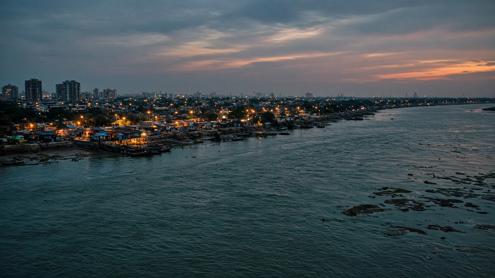

Sea Level Rise & Coastal Impacts
Published on July 12, 2026

Sea level rise is one of the most consequential and long-lasting impacts of climate change. Global mean sea level has increased by roughly twenty centimeters since the late nineteenth century, and the rate of rise is accelerating as thermal expansion of warming ocean water combines with meltwater from glaciers and ice sheets. Low-lying coastal areas, small island nations, and densely populated deltas face growing risks from permanent inundation, storm surge amplification, saltwater intrusion into aquifers, and erosion of beaches and wetlands. Even modest increases in baseline sea level dramatically raise the damage potential of cyclones and typhoons that push water inland.
Coastal impacts extend beyond physical flooding to economic disruption, displacement, and loss of cultural sites. Infrastructure such as ports, roads, power plants, and wastewater systems built for historical sea levels may become unusable or require costly retrofitting. Ecosystems including mangroves, salt marshes, and coral reefs provide natural buffers but are themselves stressed by warming and acidification. Managed retreat, seawalls, elevated construction standards, and restoration of coastal wetlands form part of adaptation toolkits, though each option involves trade-offs between cost, equity, and environmental integrity.
While Nepal is landlocked, sea level rise affects the region through shared climate systems, migration pressures, and global supply chains dependent on coastal hubs. South Asian megacities such as Mumbai, Dhaka, and Kolkata face compound risks from subsidence, river flooding, and rising seas. International climate finance and insurance mechanisms increasingly recognize loss and damage from slow-onset events like sea level rise. Reducing emissions remains the primary lever for limiting long-term rise, but near-term adaptation planning is urgent for the hundreds of millions of people who live and work within reach of changing coastlines.

समुद्री सतहको उचाइ बढ्नु जलवायु परिवर्तनका सबैभन्दा महत्त्वपूर्ण र दीर्घकालीन प्रभावहरूमध्ये एक हो। उन्नाइसौ शताब्दीको अन्त्यदेखि विश्वव्यापी औसत समुद्री सतह लगभग बीस सेन्टिमिटर बढेको छ, र तातो भएको समुद्री पानीको तापीय विस्तार र हिमनदी तथा बरफ पटबाट आउने पग्लिएको पानी मिल्दा बढ्ने दर तीव्र हुँदै छ। तल्लो-स्थानका तटीय क्षेत्र, साना टापु राष्ट्र र घना बस्ती भएका डेल्टाहरू स्थायी डुबान, आँधीबेहरीको प्रवर्द्धन, भू-गर्भमा खारा पानीको प्रवेश र समुद्र किनार तथा सिमसार क्षेत्रको क्षरणबाट बढ्दो जोखिममा छन्। आधारभूत समुद्री सतहमा सामान्य वृद्धिले पनि भित्रतिर पानी धकेल्ने चक्रवात र टाइफुनको क्षति क्षमता नाटकीय रूपमा बढाउँछ।
तटीय प्रभाव भौतिक बाढीभन्दा बढी आर्थिक अवरोध, विस्थापन र सांस्कृतिक स्थलहरूको हानिसम्म फैलिएको छ। बन्दरगाह, सडक, विद्युत गृह र फोहोर पानी प्रणाली जस्ता पुरानो समुद्री सतहका लागि निर्मित पूर्वाधार प्रयोग गर्न नमिल्ने हुन सक्छन् वा महँगो पुनः संरचना चाहिन्छ। म्यानग्रोभ, खारा दलदल र प्रवाल भित्ता जस्ता पारिस्थितिकी तन्त्रले प्राकृतिक सुरक्षा दिन्छन् तर तापक्रम वृद्धि र अम्लीकरणले तिनलाई पनि दबाबमा राख्छ। व्यवस्थित पछाडी हट्ने, समुद्र पर्खाल, उच्च निर्माण मापदण्ड र तटीय सिमसार क्षेत्रको पुनर्स्थापना अनुकूलन उपकरणहरूको अंश हुन्, यद्यपि प्रत्येक विकल्पमा लागत, समानता र वातावरणीय अखण्डताबीच समझदारी आवश्यक छ।
नेपाल भू-बद्ध भए पनि, समुद्री सतहको उचाइ बढ्नु साझा जलवायु प्रणाली, बसाइ सर्ने दबाब र तटीय केन्द्रमा निर्भर विश्वव्यापी आपूर्ति श्रृंखलामार्फत क्षेत्रलाई प्रभाव पार्छ। मुम्बई, ढाका र कोलकाता जस्ता दक्षिण एसियाली महानगरहरू धँसाव, नदी बाढी र बढ्दो समुद्रको संयुक्त जोखिममा छन्। अन्तर्राष्ट्रिय जलवायु वित्त र बीमा प्रणालीहरूले समुद्री सतह बढ्ने जस्ता ढिलो सुरु हुने घटनाबाट हुने हानि र क्षतिलाई बढ्दो रूपमा स्वीकार गर्दै छन्। उत्सर्जन घटाउनु दीर्घकालीन वृद्धि सीमित गर्ने मुख्य उपकरण रहन्छ, तर परिवर्तनशील तटरेखा नजिक बस्ने र काम गर्ने सयौं लाख मानिसहरूका लागि निकट-अवधिको अनुकूलन योजना अत्यावश्यक छ।

समुद्र का स्तर में वृद्धि जलवायु परिवर्तन के सबसे महत्वपूर्ण और दीर्घकालिक प्रभावों में से एक है। उन्नीसवीं सदी के अंत से वैश्विक औसत समुद्र का स्तर लगभग बीस सेंटीमीटर बढ़ चुका है, और गर्म होते समुद्री पानी के तापीय विस्तार तथा ग्लेशियर और बर्फ की परतों से पिघले पानी के मिलने से बढ़ने की दर तेज हो रही है। निम्न तटीय क्षेत्र, छोटे द्वीप राष्ट्र और घनी आबादी वाले डेल्टे स्थायी जलमग्नता, तूफानी लहरों के बढ़ने, भू-जल में खारे पानी के प्रवेश और समुद्र तट तथा आर्द्रभूमि के कटाव के बढ़ते जोखिम का सामना कर रहे हैं। आधार रेखा समुद्र स्तर में मामूली वृद्धि भी भीतर की ओर पानी धकेलने वाले चक्रवात और तूफान की क्षति क्षमता को नाटकीय रूप से बढ़ा देती है।
तटीय प्रभाव भौतिक बाढ़ से आगे आर्थिक व्यवधान, विस्थापन और सांस्कृतिक स्थलों की हानि तक फैलते हैं। बंदरगाह, सड़क, बिजली घर और अपशिष्ट जल प्रणाली जैसा ऐतिहासिक समुद्र स्तर के लिए बना बुनियादी ढाँचा अनुपयोगी हो सकता है या महँगे पुनर्निर्माण की आवश्यकता पड़ सकती है। मैंग्रोव, खारे दलदल और प्रवाल भित्तियाँ प्राकृतिक बफर प्रदान करती हैं, लेकिन गर्मी और अम्लीकरण से स्वयं भी दबाव में हैं। प्रबंधित पीछे हटना, समुद्र तट की दीवारें, उच्च निर्माण मानक और तटीय आर्द्रभूमि क्षेत्र की बहाली अनुकूलन उपकरणों का हिस्सा हैं, हालाँकि प्रत्येक विकल्प में लागत, समानता और पर्यावरणीय अखंडता के बीच संतुलन आवश्यक है।
नेपाल भले ही स्थल-रुद्ध हो, समुद्र का स्तर बढ़ना साझा जलवायु प्रणालियों, प्रवासन के दबाव और तटीय केंद्रों पर निर्भर वैश्विक आपूर्ति श्रृंखलाओं के माध्यम से क्षेत्र को प्रभावित करता है। मुंबई, ढाका और कोलकाता जैसे दक्षिण एशियाई महानगर धंसाव, नदी बाढ़ और बढ़ते समुद्र के संयुक्त जोखिम का सामना कर रहे हैं। अंतर्राष्ट्रीय जलवायु वित्त और बीमा तंत्र समुद्र स्तर बढ़ने जैसी धीमी शुरुआत वाली घटनाओं से होने वाले नुकसान और क्षति को अधिक स्वीकार कर रहे हैं। उत्सर्जन कम करना दीर्घकालिक वृद्धि सीमित करने का मुख्य उपाय बना रहता है, लेकिन बदलती तटरेखाओं की पहुँच में रहने और काम करने वाले करोड़ों लोगों के लिए निकट-अवधि की अनुकूलन योजना अत्यावश्यक है।